当一个人手上有五十多万的预算，想买一台行政级轿车，要如何说服ta不选宝马5系、奔驰E级或者奥迪A6，来选择一台国产车？
这曾经是放在全中国汽车品牌面前的大难题，而且不用说50万元这个高端价位，就连20万元这样的“甜点”价位段，“BBA”们也不是中国汽车品牌能够“碰瓷”的。然而三十年河东河西，在如今的汽车市场上豪华品牌和国产品牌已经“攻守之势异也”，20-30万元价位段中选择国产新能源车的人比比皆是，而来到50万元的价位段，也有越来越多的消费者选择蔚来、问界，而非传统的BBA、“56E”。
鸿蒙智行旗下的旗舰SUV问界M9会是其中的代表作，其单车型的交付量在7月份达到了惊人的1.8万台，在很长的一段时间内都是50万元以上车型的销量冠军。这说明，国产新能源车已经在SUV赛道正面击败了BBA，但在轿车赛道，这样的产品仍未出现。
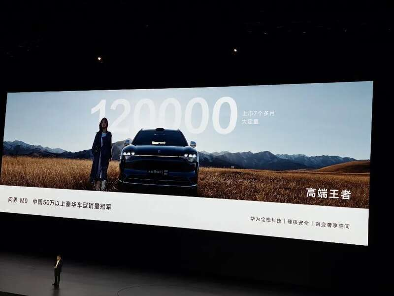
也由此回到最一开始的问题，中国汽车品牌是否有能力打造一款，在50万元价位能够挑战“56E”的产品？有了问界M9这个成功例子，鸿蒙智行显得信心十足，认为享界S9有足够资格。
电车通在发布会现场全程见证了享界S9的重磅上市，综合余承东现场的讲解小通认为，这款车其实在严格意义上不能算是和“56E”处于同一赛道。这样说的理由是，享界S9的核心理念是依靠出色的智能化表现来打造“豪华感”，而我们知道传统BBA则是靠考究的设计、高端的材质、宽敞的空间……
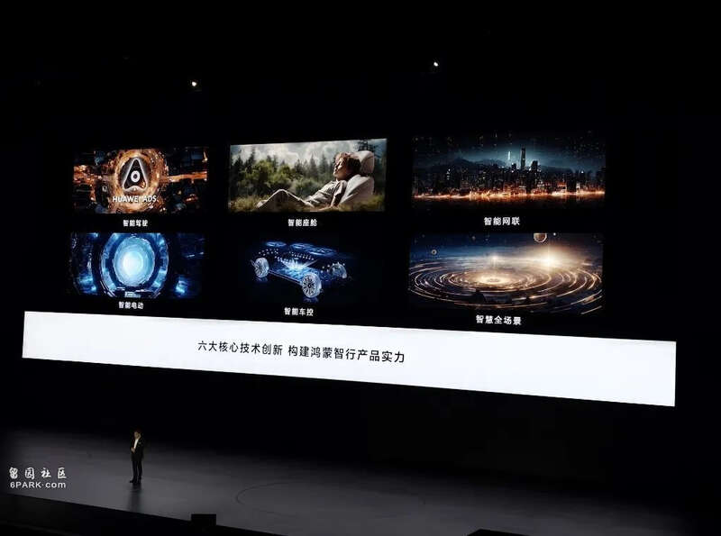
小通还记得在数码圈曾经有一句话，“能打败iPhone的绝不可能是下一个iPhone”，现如今靠智能化杀入豪华品牌腹地，享界S9能否成功自然变得极具参考性。
智能化武装整车，
底盘、座舱难以挑剔
先来说基本信息，享界S9沿用了此前出现在智界S7上的“OneBox”设计理念，轴距达到了3050mm。论轴距、车长享界S9在绝对数据上并不如宝马奔驰，但内部空间却更加宽敞，“得房率”达到了67%。简单说就是乘客坐到车内，就发现内部空间更大。
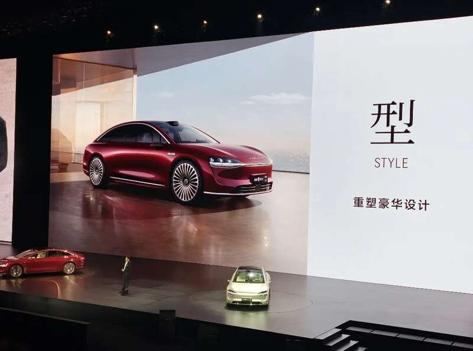
至于其他参数，享界S9将全系标配100度“巨鲸”电池，最大续航可达816km，而零百加速时间最快则为3.9秒。补能能力上，充电5分钟该车最多可增加200公里续航，在绝对速度上还谈不上“遥遥领先”，但放眼这个尺寸、这个电池容量表现已经相当不错。
鸿蒙智行同样将底盘视为智能化的重要部分，由此享界S9搭载途灵底盘并不会让人感到意外。除了全系空悬+CDC这样的硬件外，软件算法上加入了例如ADC自适应减震控制等技术，能够实现类似于“魔毯”的悬架表现，过减速带、颠簸路段表现更加丝滑。
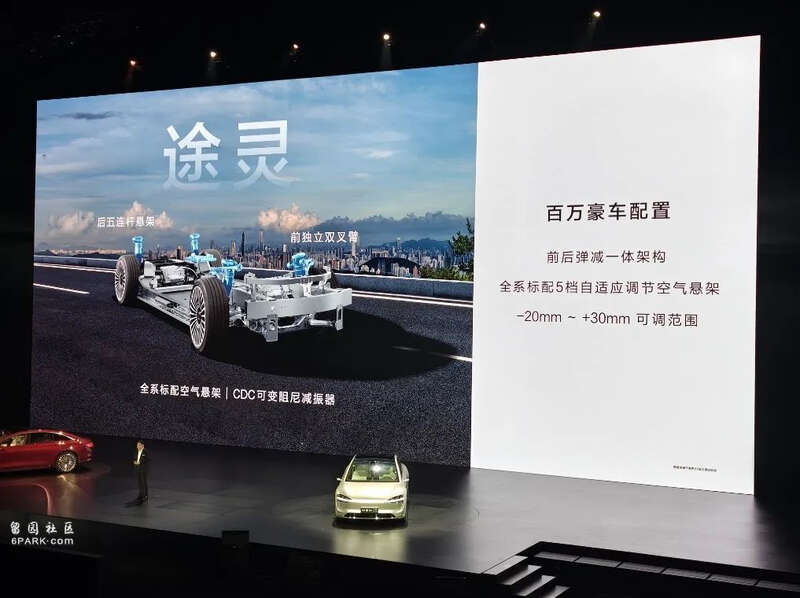
eASC电子防滑系统、TVC扭矩控制系统则可以很好地保障车身动态表现，在急打方向等场景中也能保持车身稳定。余承东介绍，享界S9作为豪华车型实现了81.4km/h的麋鹿测试成绩，和百万级的豪车相比也属于领先水平。
还有一个功能非常重要，享界S9将“防晕车”纳入到乘坐舒适性的指标中，并首发了防晕车功能。简单来说，就是通过主动悬架的控制、路面的感知来控制车身动态，最大幅度减缓车辆停止、启动和加减速过程中出现了高频摆动，从而减缓晕车情况。
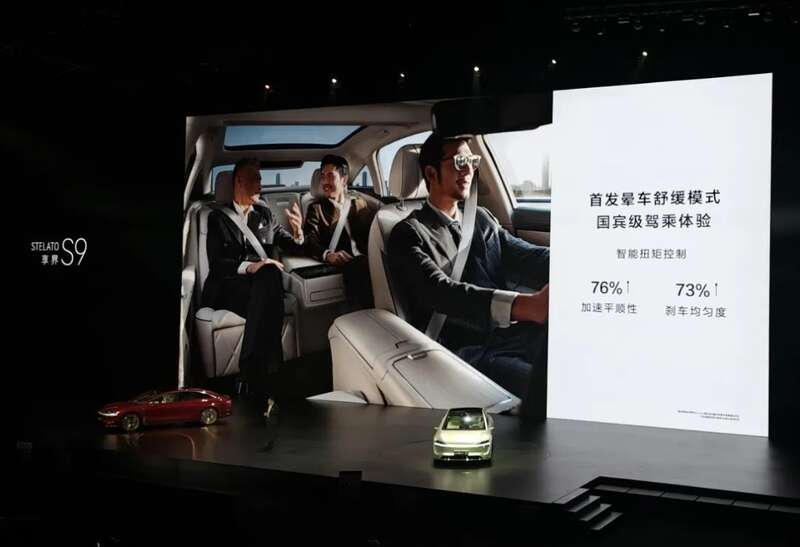
客观来说，享界S9上这一套底盘其实在行业中不难找到类似竞品，比如蔚来ET9的天行底盘也能实现类似功能，不过考虑到蔚来ET9的定价在80万元级别，就能看出享界S9其实也具备一定的“性价比”。
由此可见，享界S9所展示的其实就是传统豪华行政级轿车所擅长的部分，但实现的方法不只是靠机械的调校，而是加入了智能化的相关技术，来让体验得到提升。在传统豪华品牌熟悉的赛道击败他们之后，来到车厢内，就是鸿蒙智行更擅长的领域。
享界S9的内饰设计基本沿用了家族式设计，简洁之余材质运用符合该价位的水准，更加考究和奢华。比如说，车顶是麂皮材质、座椅标配Nappa真皮等等，配合细致的缝线，在豪华感氛围的营造上基本不输同级车型。
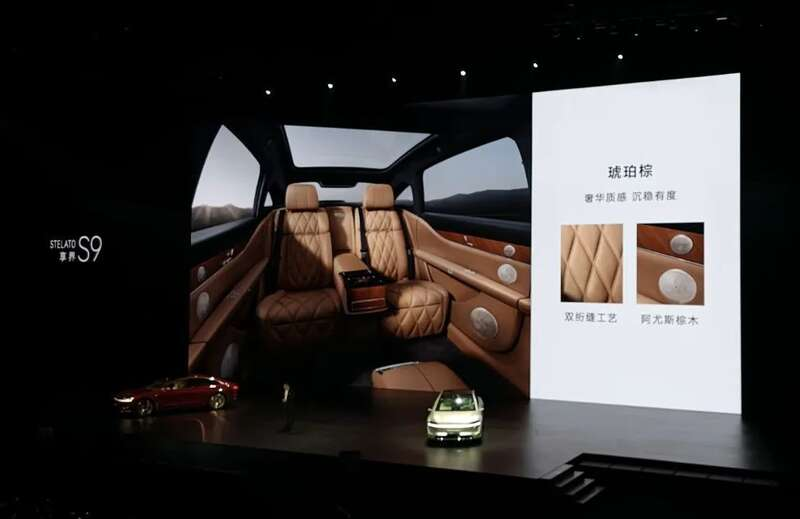
屏幕已经成为衡量座舱内智能化能力的依据之一，在后排你至少能见到四块屏幕，其中两块是放置在前排座椅背面的13英寸华为平板，后排中央扶手上的秘书屏和后排风口出风口控制面板也非常抢眼。屏幕的到来能让车内的操作更可视化，不过要担心的是，一些上了年纪的乘客可能使用屏幕来控制整车功能不会那么熟练。
享界S9在座舱内最大的亮点是后排右侧的零重力座椅，一来在轿车上设计零重力座椅的确难度不低，另一方面享界S9还加入了一些监测功能，乘客在行车时依然可以使用零重力座椅，而且安全带依然能提供保障，整个数字座舱充分照顾到了后排乘客的感受。
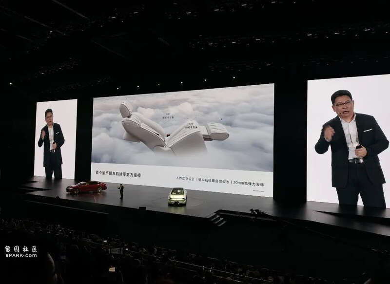
在演员高叶的分享中也能见智能科技对营造豪华感带来的价值，她表示现场销售演示了一键隐私功能后给她带来了非常大的震撼，同时在体验过程中，后排零重力座椅、晕车舒缓功能等也都给她带来了较大感触。
对于演员这种经常接触豪车的群体来说，无论是黄晓明还是高叶的证言都能说明，靠智能化来打造豪华感的确是可行之法，而且也非常依赖技术基础。享界S9的出现反而说明了一点，过去传统豪车上所谓的“设计” “用料”其实不难追赶，反而今天呈现出来的一系列智能化功能，却让他们高山仰止。
这不，鸿蒙智行还有华为乾崑ADS 3.0这个“大招”。
ADS 3.0亮相，
新功能颠覆“智驾”想象
早在今年4月会，在北京车展前夕华为乾崑的ADS 3.0智驾系统就已经公布，大概的架构也可以简单介绍一下：GOD+PDP+本能安全网络，其中GOD和PDP都是“端到端”结构的决策网络，也就是系统直接处理传感器捕捉到的信息并进行输出，去掉了规则执行的步骤，自学习能力和反应能力都有显著提升。
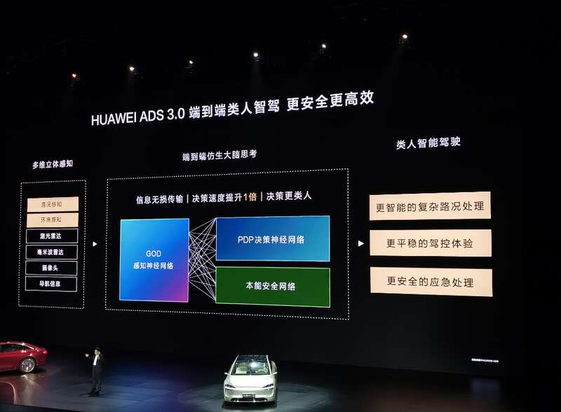
目前小鹏、华为的智驾系统都是使用这种模块化端到端的技术架构，而理想则希望在未来升级到“One Model”模式，也就是将所有的模块都用一整个端到端网络负责，理论上系统运作的效率还将有进一步提升。
先来介绍基础能力，ADS 3.0上第一个大提升是AEB能力，其最大生效范围现已覆盖4km/h到150km/h，尤其是相对静止行人、侧翻车和水马刹停时速分别提升至110km/h和120km/h，安全性将会有明显提升；侧向的主动安全提升至40km/h-130km/h，后向的主动安全生效范围，也提升至1km/h-60km/h。另一项颇有意义的升级，现在享界S9和问界M9都将加入误踩油门防碰撞功能，进一步降低行车风险。
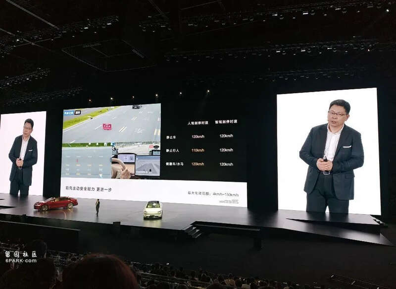
回到智驾能力上，结合我们的动态体验内容小通可以为大家划出重点。
首先是体验的优化，比如变道、超车等日常场景，其路线选择的能力、反应能力都有明显的数据提升，也就是所谓的“体验更拟人”。
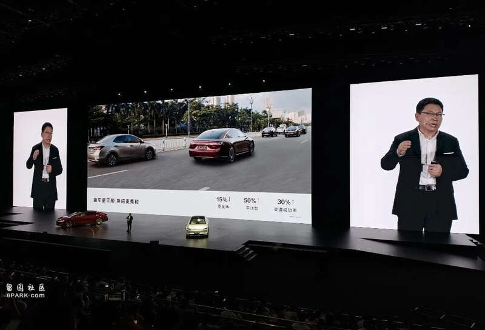
其次是场景的覆盖，此前搞不定的复杂场景如环岛，现在也可以交给智驾来完成。
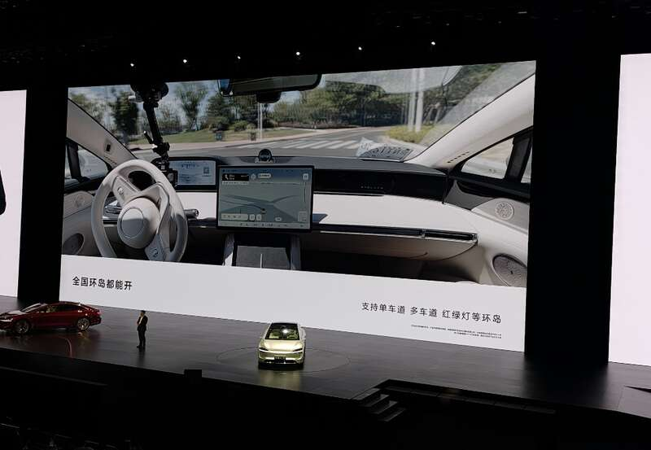
最后则是一个新增功能，“车位到车位智驾”，这在我们的体验视频中也有体现。简单来说，能够从出发地的车位开始启用智驾，然后顺利通过闸机、收费口等，最终到达目的地并实现代客泊车，顺利的情况下全程不用人接管。
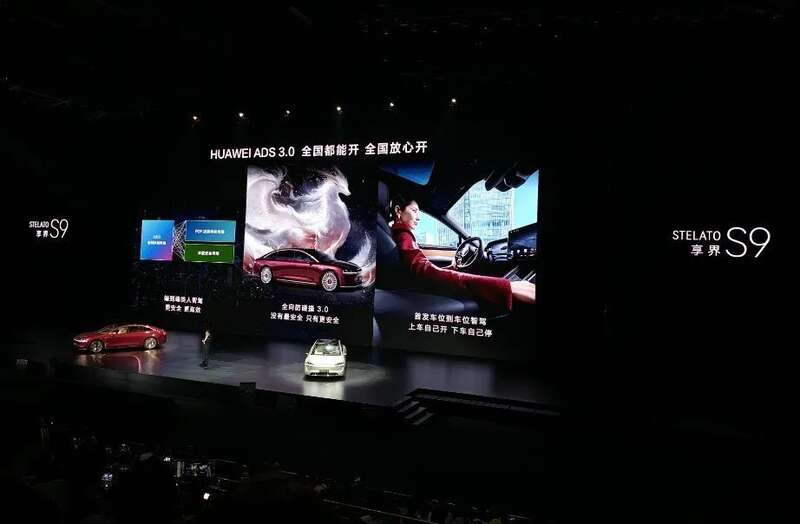
不久前的小鹏AI智驾发布会上也曾描述过类似的智驾场景，不过小鹏的类似功能要到今年第四季度才上线，享界S9再次打出了一个时间差。而且在泊车能力上，也明显可见享界S9率先实现了更多的功能并带来更多玩法，比如远程挪车、泊车代驾等等，无一不走在了行业的前沿。
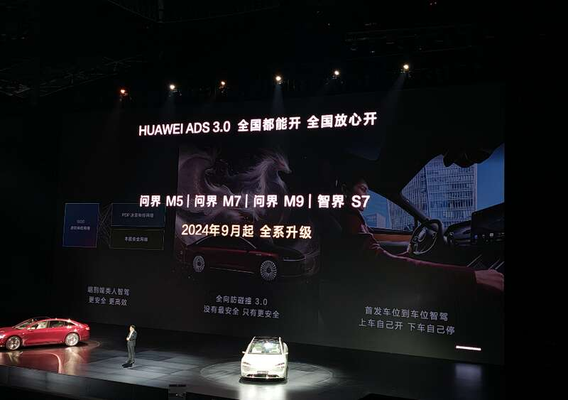
回到最开始的问题上，享界S9在“豪华”赛道上想要找出传统品牌已经找到了“方法论”，凭借现阶段“独一无二”的智驾体验，享界S9的确有机会吸引目标群体的眼光，甚至俘虏他们的芳心。但同时也要认识到，一般来说购买行政级轿车的客户都会配司机，这种情况下智驾的吸引力到底会有多少？如果司机在驾驶过程中开启智驾，是不是会引起老板的不满？
这些潜藏的疑问，或许最后销量会告诉我们答案。
堪称良心的价格，
能否打破“高端纯电”魔咒？
来到紧张刺激的售价环节，享界S9给出了一个令人意外和惊喜的价格，享界S9一共只有两个版本，基础款享界S9 Max定价39.98万元，而顶配Ultra版，则定在了44.98万元。
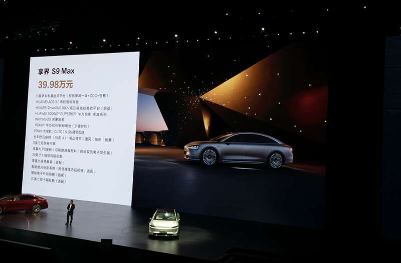
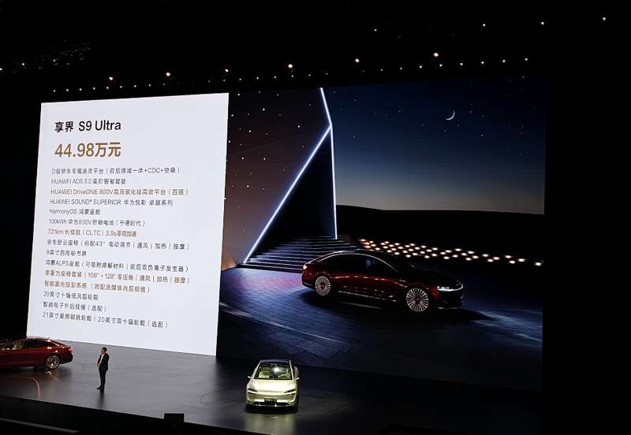
简单对比的话，二者之间的配置其实差距不大，享界S9 Max就已经标配了ADS 3.0、前后弹减一体+CDC+空悬等配置，基础体验相当出色。尽管如此，小通还是建议各位意向车主选择享界S9 Ultra，因为这款车上最能体现“享受”的地方在于后排功能，包括零重力座椅、投影系统等，这些功能在享界S9 Ultra上是标配；享界S9 Max可以选择选装，但如果把这些功能都算上，价格就不低了。
又或者可以这样理解，如果购买享界S9主要是自己开和家庭用车，对后排体验不太执着，那么Max版本完全足够；如果是老板买来自己享受、接待客人，Ultra就更加实惠。
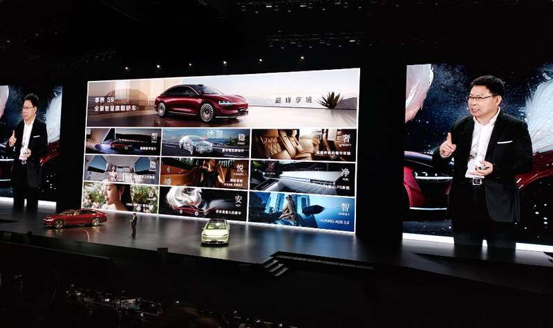
总的来说，从车内配置、基础性能、尺寸空间和定价等多方面看，享界S9的确是树立了“新能源行政轿车”的品类标杆，而且靠的还不是“跟随”，而是“创新”。但最终还是要靠销量说话，小通一直在强调“高端纯电”并不是一条好走的赛道，享界S9即使有了这么强的综合产品实力，但纯电品类在高端市场是不是行得通，仍要打上一个问号。
又或者，正是意识到高端纯电的高难度，鸿蒙智行和北汽才会联手给出一个颇具诚意的定价，希望以价格开路，先声夺人。不管怎么说，这都是中国汽车行业又一次针对海外传统势力的冲锋，至少在未来当你手握50万元预算看车的时候，“BBA”不再是唯一选项。